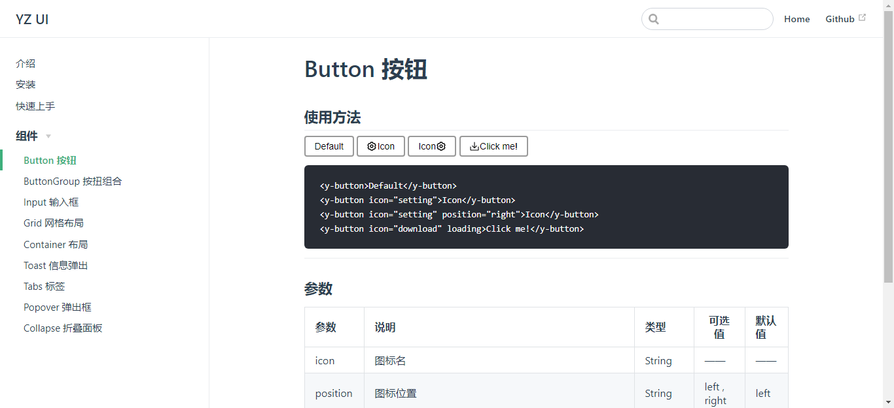
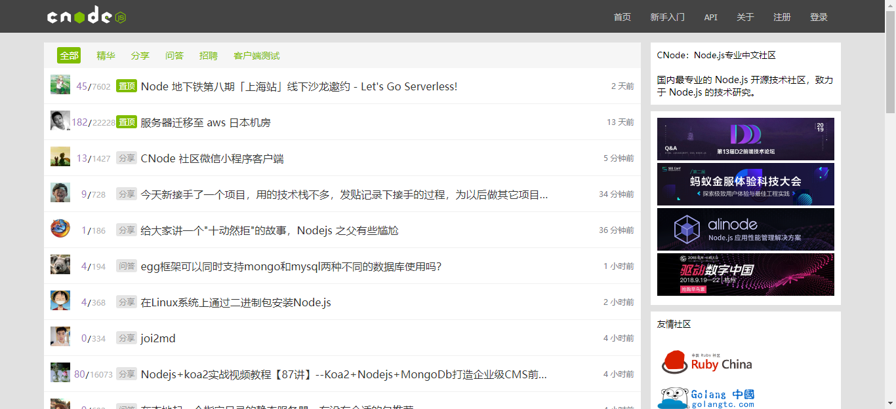
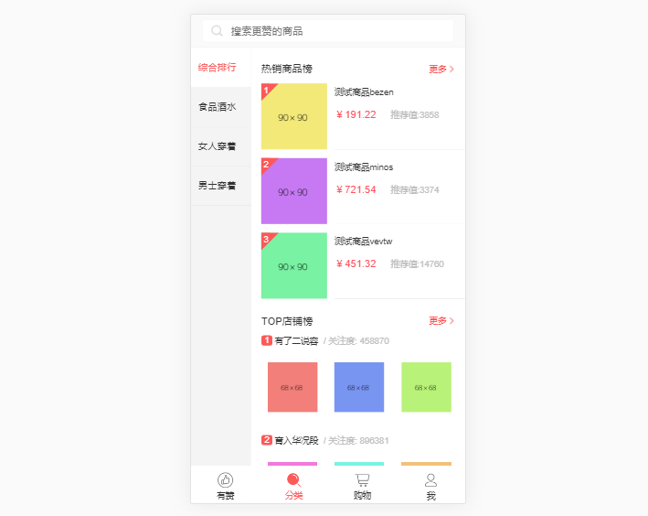
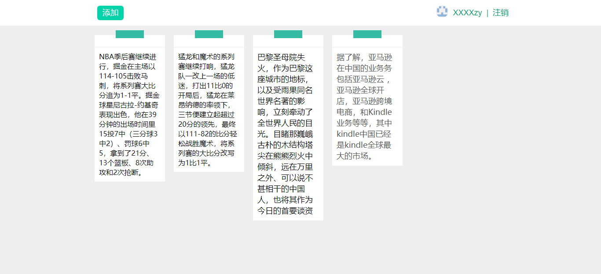
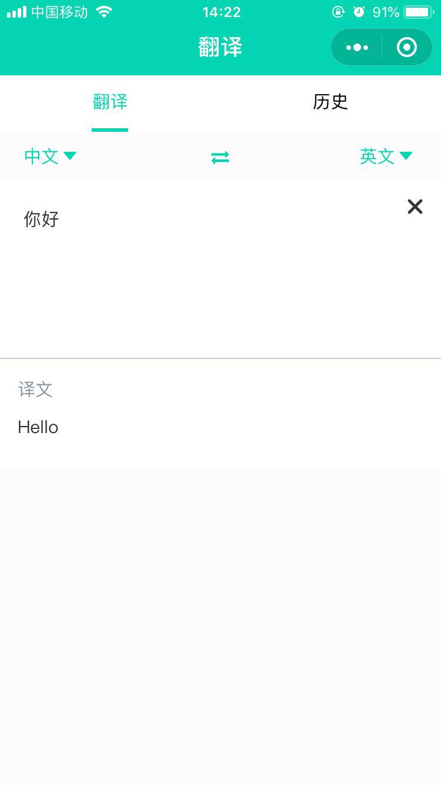

教育经历
2015/09--2019/06
暨南大学
绩点排名专业前30%，在校期间获得奖学金两次
我的技能
-
1.HTML5 & CSS3
- 能够独立制作精美网页，掌握HTML5语义化标签如nav、header等；
- 掌握CSS3动画、过渡、弹性盒子布局和媒体查询等；
-
2.原生JavaScript
- 掌握原生JavaScript，熟悉常用API，理解重要概念如原型、作用域链、闭包、ajax、跨域等；
-
3.jQuery
- 熟悉jQuery常用api，掌握jQuery事件、ajax等，使用jQuery进行DOM操作以及制作网页；
-
4.Vue.js
- 熟悉Vue.js常用的功能和指令，及其生态系统的工具如Vue-Router、Vuex；理解MVVM框架的的基础原理、Vue的响应式原理、生命周期等 ；能够使用vue-cli脚手架工具搭建项目；
-
5.其它
- 了解webpack基本使用以及前端工程化；
- 了解node.js的基础使用以及NPM的使用；了解express基本使用；
个人项目
-
1.YZ-UI （Vue 组件库）
 -
2.仿CNODE社区
 -
3.Vue.js重构有赞商城(移动端)
 -
4.我的便利贴
 -
项目介绍：
使用 Node.js + Express 制作的一个在线便利贴，带数据库、登录等功能。
-
技术栈：express、webpack、es6
- 预览地址： 点击预览（暂时无法预览）
- 项目源码： 点击查看
-
-
5.翻译小程序
